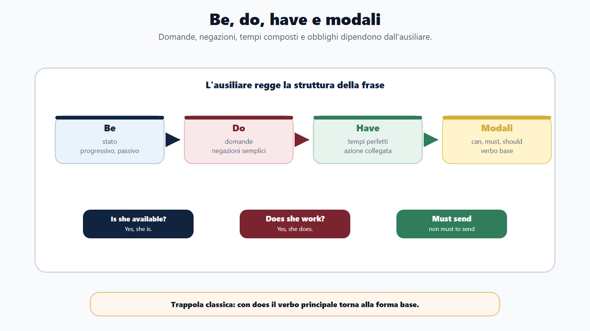
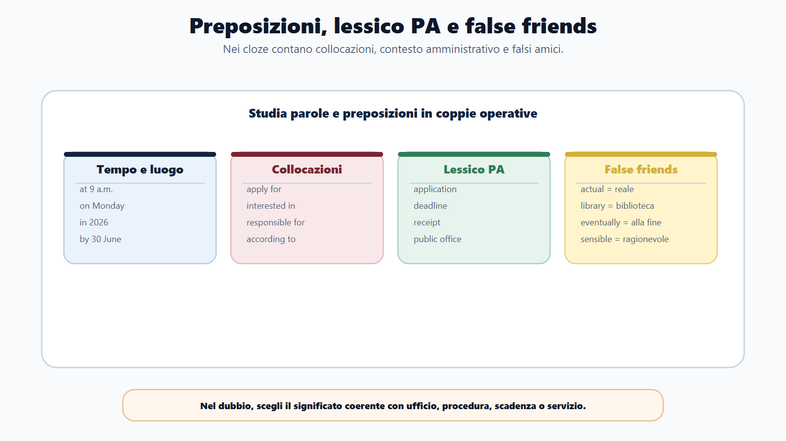
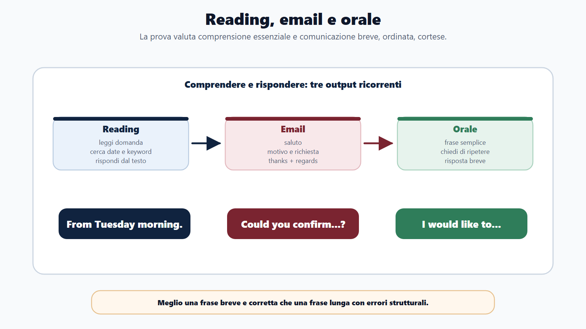
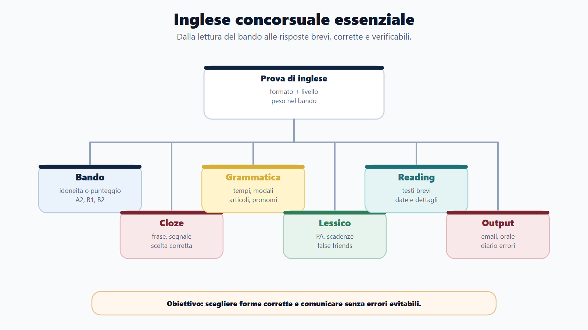
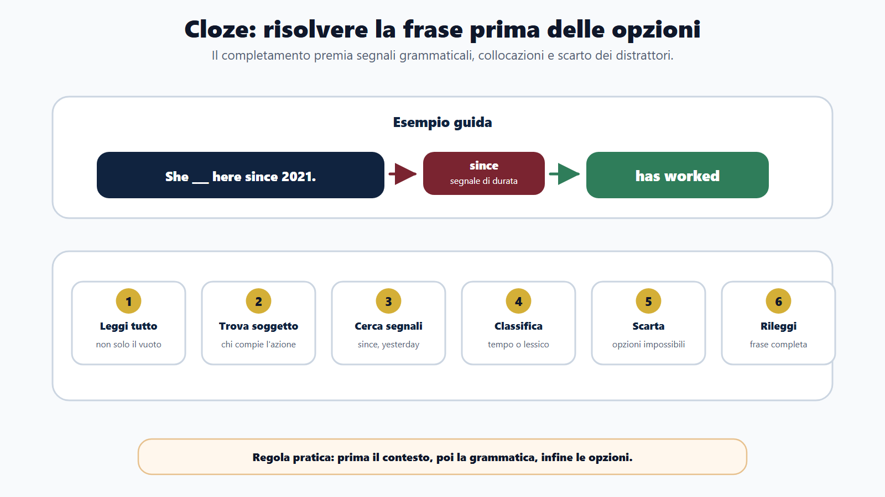
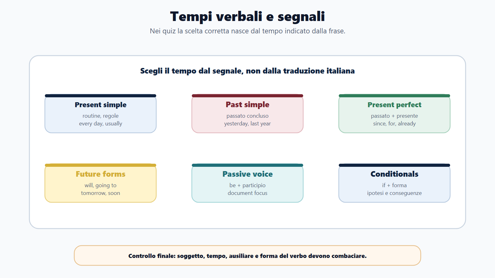

VOL-01 · Capitolo 11
Parte II · Materie comuni
Inglese concorsuale
essenziale
L’inglese nei concorsi verifica se sai comprendere messaggi semplici, riconoscere forme corrette, interpretare un breve testo e usare formule essenziali. Non serve uno stile raffinato: serve essere affidabili. Il primo passo resta la lettura del bando, non un manuale di grammatica scelto a caso.
Schema
Ausiliari modali

Schema
Preposizioni lessico false friends

Schema
Reading email orale

Schema
Mappa inglese concorsuale

Schema
Metodo cloze

Schema
Tempi verbali segnali

01 · Che cosa chiede la prova
Non è un esame scolastico completo
Obiettivo: domande ricorrenti, trappole grammaticali, senso di email e avvisi, frasi brevi e corrette. Per i profili generalisti la soglia utile sta di solito tra A2, B1 e B2 operativo: capire un breve testo d’ufficio, riconoscere la frase corretta, rispondere con frasi semplici. È meglio una frase lineare e corretta che una frase ambiziosa piena di errori.
Bando
Requisito, titolo, quiz, orale, idoneità, livello QCER. La formulazione decide il tempo da assegnare.
Nuclei
Cloze, tempi, ausiliari, modali, preposizioni: le domande statisticamente più probabili.
Output
Frasi, mini-email, reading, risposte brevi. Grammatica, contesto e velocità insieme.
Leggere «inglese» e pensarlo da ripassare alla fine. La grammatica di base sembra facile, ma i distrattori sono costruiti su errori comuni: do/does, since/for, much/many, to dopo un modale, preposizione tradotta dall’italiano.
02 · BANDO
Come usare questo capitolo sul bando
| Che cosa fare | Se la salti | |
|---|---|---|
| B — Bando | Controlla se l’inglese è requisito, titolo, prova scritta, orale o idoneità. «Accertamento» → quiz o orale semplice; B1/B2 → reading e funzioni; certificazione valutabile → quali titoli e punteggi. | Sottovaluti un’idoneità che può escludere. |
| A — Aree | Grammatica, lessico, reading, funzioni comunicative, email. | Liste infinite di vocaboli senza contesto. |
| N — Nuclei | Cloze, tempi, ausiliari, modali, preposizioni. | Parti da ciò che preferisci, non da ciò che esce. |
| D — Diario | Tempo verbale, articolo, preposizione, pronome, falso amico. | Ripeti lo stesso errore in ogni batteria. |
| O — Output | Risposte brevi, frasi orali, mini-email, quiz risolti. | Sai la regola e non la riconosci in una frase. |
03 · Cloze
Sei passaggi, poi la frase completa
Una frase contiene uno spazio: devi scegliere l’opzione che funziona nella struttura. Esempio: She ___ in the public office since 2020 → has worked, perché since 2020 collega passato e presente. Dopo un modale, forma base: must send, non must to send e non must sends.
| Frase | Soluzione | Perché |
|---|---|---|
| The deadline is ___ Monday. | on | I giorni prendono on. |
| Applicants must ___ the form online. | complete | Dopo must, forma base. |
| The office ___ closed yesterday. | was | Yesterday richiede past simple. |
| I have worked here ___ three years. | for | For indica durata; since il punto di inizio. |
| The document was ___ by email. | sent | Passivo: was + participio passato. |
| This is the employee ___ manages the file. | who | Referente persona. |
04 · Tempi
Il segnale nella frase decide il tempo
Schema base: soggetto + verbo + complemento. Nelle domande l’ausiliare precede il soggetto: Where do you work?, non Where you work?. Non memorizzare tutte le sfumature: riconosci il tempo coerente con il contesto.
| Tempo | Uso e segnali | Esempio d’ufficio |
|---|---|---|
| Present simple | Abitudini, orari, regolamenti. usually, every day. Terza persona: works. | The office opens at 9 a.m. |
| Present continuous | Azione in corso. now, currently. | The office is updating the list. |
| Past simple | Passato concluso. yesterday, last week, in 2024. | The candidate submitted the form yesterday. |
| Present perfect | Legame col presente. already, yet, since, for. | She has worked there since 2021 ≠ She worked there in 2021. |
| Future | will decisione/promessa; going to intenzione; present continuous programma; present simple orario ufficiale. | The test starts at 9 a.m. |
05 · Passivo, condizionali, -ing
Nei testi amministrativi il soggetto spesso subisce l’azione
The notice was published è più naturale di The notice published. Schema: be + participio passato. I am interested in, non I am interesting in: -ed per la persona, -ing per la cosa.
Conditionals
Zero: if + present, present — If you miss the deadline, the application is rejected. First: if + present, will — If you submit today, you will receive a receipt. Second: if + past, would. Third: if + past perfect, would have. Nei quiz B1/B2 ricorrono soprattutto zero e first.
Infinito e -ing
Infinito con to dopo molti verbi e per lo scopo: I need to submit the form. Forma in -ing dopo preposizioni e alcuni verbi: interested in working, after sending. Participio passato nei perfetti e nel passivo: has received, was attached.
06 · Ausiliari e modali
Dopo il modale, forma base. Nella risposta breve, l’ausiliare
Does she work here?, non Does she works here?. A Do you work here? si risponde Yes, I do, non di norma Yes, I work.
| Forma | Funzione | Esempio |
|---|---|---|
| be | Verbo principale, progressivi, passivo. | The application was rejected. |
| do / does / did | Domande e negazioni al simple, se non c’è altro ausiliare. | They do not accept late applications. |
| have / has | Tempi perfetti; anche verbo principale. | I have received the email. |
| can / could / may / might | Capacità, permesso, possibilità (might più debole). | You may access the service with SPID. |
| must / have to / should / would | Obbligo forte; obbligo pratico; consiglio; cortesia o ipotesi. | Candidates must bring an identity document. |
07 · Preposizioni e lessico PA
Non coincidono sempre con l’italiano
Nel cloze la preposizione si verifica con la parola che la precede o la segue: apply for, responsible for, interested in, in compliance with. Il lessico si impara in coppie: application con submit, deadline con by, form con complete.
| Gruppo | Uso | Esempio |
|---|---|---|
| Tempo | at ore; on giorni; in mesi/anni; by entro; until fino a; within entro un periodo. | by 30 June, on Monday, within ten days. |
| Luogo | in area; at punto; on superficie o sito; to movimento. | on the website, at the information desk. |
| Lessico | application domanda; notice avviso; deadline scadenza; requirement requisito; receipt ricevuta. | Submit your application online. |
Articoli e quantificatori: a/an, the, some/any, much (non numerabile) / many (numerabile), few/little. There are not many chairs, non much chairs.
08 · Reading
Trova l’informazione, non tradurre ogni parola
Brani brevi: email, avvisi, istruzioni, servizi pubblici. Metodo: leggi prima la domanda; cerca date, numeri e verbi di obbligo; distingui informazione principale e dettaglio; non farti ingannare da parole simili all’italiano; scegli la risposta giustificata dal testo.
| Testo (senso) | Domanda | Attenzione |
|---|---|---|
| Ufficio chiuso lunedì; prenotazioni online da martedì mattina; urgenze via email. | When can citizens book online? | From Tuesday morning. Non confondere chiusura e primo giorno utile. |
| Domanda entro il 30 June; dopo, non accettata; allegare documento. | What if after the deadline? | It will not be accepted. La conseguenza è nel testo. |
| Risultati sul sito; niente telefonate; altre info via email. | Where will the results be published? | On the official website. Email ≠ canale dei risultati. |
| Certificati medici: non in email ordinaria, ma area di upload sicura. | Where should medical certificates go? | Secure upload area. Due canali, due tipi di documento. |
09 · Funzioni e email
Frasi brevi da orale e da ufficio
Richieste, offerte, permesso, scuse, conferme. All’orale basta una presentazione personale, una lettura, una traduzione breve e una risposta a domanda semplice, se il bando è di accertamento base.
Frasi utili
Could you send the document again? I would like to ask a question. The office will reply soon. Please find the form attached. I am writing to enquire about the deadline. Cortesia: could e would like pesano più di un vocabolario raro.
QCER in pratica
A2: avvisi e routine. B1: testi brevi e risposte autonome. B2: testi più articolati e scambio preciso. C1-C2: profili internazionali o specialistici. Il bando, se indica un livello, è un segnale di difficoltà, non un diploma da recitare.
10 · Verifica
Due domande da saper spiegare
How would you prepare English for this competition?
I would read the notice first to see whether English is a test, an interview or a pass/fail requirement. I would practise sentence completion, verb tenses, auxiliaries, modals and prepositions, then short office texts and simple spoken answers. The aim is accuracy in common forms, not literary style. I would record repeated mistakes — since/for, third person -s, prepositions — and reuse them as revision.
Dopo un modale serve to? Since e for coincidono?
No. Dopo can, must, should, may, might, could, would si usa la forma base: must send. Since introduce il punto di inizio (since 2020); for la durata (for three years). Stessa famiglia: does she work (non works); risposta breve con l’ausiliare.
11 · Mini-esercizio
Completa e spiega in una riga
| Item | Risposta e perché |
|---|---|
| There are not ___ chairs in the room. | many: numerabile plurale. |
| She is interested ___ public services. | in: collocazione. |
| If you submit the form today, you ___ receive a receipt. | will: first conditional. |
| The results will be ___ on the website. | published: passivo amministrativo. |
| Has he sent the form? — Yes, he ___. | has: risposta breve con l’ausiliare. |
| False friend: application come «applicazione software»? | Nei concorsi PA è soprattutto domanda o candidatura. Controlla il contesto. |
12 · Da tenere ferme
Cinque regole, con il perché
1. L’inglese concorsuale è pratico da prova, non un corso completo. Perché il bando decide formato e peso; un’idoneità può escludere.
2. Se hai poco tempo, parti da cloze e tempi, non da liste di vocaboli. Perché ogni cloze allena grammatica, lessico e contesto insieme.
3. Dopo un modale, forma base; nella risposta breve, l’ausiliare. Perché sono le trappole più costruite.
4. Preposizioni e lessico si studiano in collocazioni d’ufficio. Perché la traduzione dall’italiano fallisce su apply for, by Monday, deadline.
5. Nel reading cerca l’evidenza nel testo, non la frase «che suona vera». Perché i distrattori mescolano canali, date e obblighi.
Prossimo capitolo
Logica, comprensione del testo e ragionamento
Dalla frase inglese al quesito che fa perdere punti: classificare prima di risolvere, connettivi, brani, vincoli, percentuali e diario degli errori.